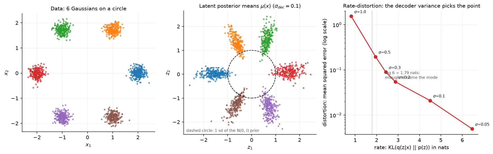

Autoencoders and VAEs¶
Why this matters at staff level. The VAE is the one generative model you will be asked to derive at a whiteboard, because the derivation tests Jensen's inequality, KL divergence, conditional independence and the reparameterisation trick in ten minutes. The production reason to know it is different: every latent diffusion model in service today generates inside a VAE's latent space, and every image or audio tokeniser feeding a multimodal LLM is a VQ-VAE variant. Strong signal is being able to derive the ELBO two ways, explain posterior collapse as a rate-distortion outcome rather than a bug, and say what the encoder of Stable Diffusion costs.
TL;DR, the interview card¶
- Autoencoder: \(x \to z \to \hat x\) with \(\dim z < \dim x\) and a reconstruction loss. No density, no prior, no way to sample.
- VAE: add a prior \(p(z)=\mathcal N(0,I)\) and an approximate posterior \(q_\phi(z\mid x)\). Maximise \(\log p(x) \geq \E_{q}[\log p_\theta(x\mid z)] - \KL(q_\phi(z\mid x)\,\Vert\, p(z))\).
- The gap in that bound is exactly \(\KL(q_\phi(z\mid x)\,\Vert\,p_\theta(z\mid x))\), which is why a tighter posterior gives a tighter bound.
- Diagonal Gaussian KL in closed form: \(\tfrac12 \sum_j (\mu_j^2 + \sigma_j^2 - \log \sigma_j^2 - 1)\). Memorise this.
- Reparameterise \(z = \mu + \sigma \odot \varepsilon\), \(\varepsilon \sim \mathcal N(0,I)\), so the gradient flows through \(\mu\) and \(\sigma\). The score-function alternative is unbiased but its variance is one to two orders of magnitude larger in practice.
- Posterior collapse (\(\KL \to 0\), decoder ignores \(z\)) follows from the rate-distortion trade-off: if reconstruction is cheap relative to the KL, ignoring \(z\) is optimal. The decoder variance \(\sigma_{dec}\) and \(\beta\) are the two knobs on that trade-off.
- VQ-VAE replaces the Gaussian bottleneck with a nearest-neighbour lookup in a codebook, gradients cross the argmin by the straight-through estimator \(z_q = z_e + \mathrm{sg}[z_q - z_e]\), and a commitment loss with weight \(0.25\) keeps the encoder near the codes.
- Production: the Stable Diffusion family generates in a VAE latent at \(f=8\) downsampling, 4 latent channels in SD 1.x and 16 in SD3. Image and audio tokenisers for multimodal LLMs are VQ-VAE descendants.
1. Intuition first¶
Take four points in \(\R^3\) that happen to lie on a plane:
A linear autoencoder with a two-dimensional bottleneck can reconstruct \(X\) with zero error: the encoder keeps \((x_1, x_2)\) and the decoder adds them back. The bottleneck forced the network to discover the constraint. With a nonlinear encoder and decoder the same thing happens on curved manifolds, which is why autoencoder features were the first useful unsupervised representations.
Two properties are missing from that autoencoder. You cannot sample from it, because you do not know which \(z\) values decode to something plausible. And nothing stops the encoder from using \(z\) as an arbitrary lookup index, spreading codes so far apart that the space between them decodes to noise.
The VAE fixes both by making the encoder output a distribution and paying a price when that distribution drifts from a fixed prior. Sampling becomes: draw \(z \sim \mathcal N(0,I)\), decode.
The middle panel of the figure below shows what that looks like after training on six Gaussian blobs arranged on a circle. The encoder places each blob's posterior in its own region of the latent plane, and the regions sit around the unit circle because the KL term pulls them toward the prior.

The right panel is the part people miss. Sweeping the decoder standard deviation \(\sigma_{dec}\) from 1.0 down to 0.05 traces a rate-distortion curve: the rate is the KL in nats, the distortion is the reconstruction error. At \(\sigma_{dec}=1\) the model spends under one nat on the latent, which is less than the \(\log 6 = 1.79\) nats needed to record which blob a point came from, so it cannot reconstruct. That is posterior collapse, produced by nothing more exotic than the choice of decoder variance.
2. The math¶
2.1 The model¶
A VAE is a latent variable model: \(p_\theta(x) = \int p_\theta(x\mid z)\,p(z)\,dz\) with \(p(z) = \mathcal N(0, I)\), \(z \in \R^{d_z}\), and a decoder \(p_\theta(x \mid z)\) that is Gaussian with mean \(\mu_\theta(z)\) and fixed variance \(\sigma_{dec}^2 I\) (Bernoulli for binary data). That integral is intractable for a neural decoder, so we introduce an encoder \(q_\phi(z\mid x) = \mathcal N(\mu_\phi(x), \diag(\sigma^2_\phi(x)))\) and bound the likelihood.
2.2 The ELBO by Jensen¶
Write the marginal as an expectation under \(q\) and apply Jensen's inequality to the concave \(\log\):
Split the logarithm:
The first term rewards reconstruction. The second keeps the posterior close to the prior. The importance-weight form \(p/q\) is where \(q\) enters, and it is valid for any \(q\) with support covering \(p\), which is why you can pick any encoder family you like.
2.3 The ELBO by the posterior identity, which tells you the size of the gap¶
The same result drops out of a decomposition that also names the slack. Start from the definition of the KL between the encoder and the true posterior:
Since \(\log p_\theta(x)\) does not depend on \(z\), it comes out of the expectation:
which rearranges to
The bound is tight exactly when the encoder equals the true posterior. Maximising the ELBO in \(\phi\) does two jobs at once: it fits the model and it shrinks the approximation gap. This is the version to derive in an interview, because it lets you answer the follow-up ("how loose is the bound?") in one line.
2.4 The Gaussian KL in closed form¶
For \(q = \mathcal N(\mu, \diag(\sigma^2))\) and \(p = \mathcal N(0, I)\) in \(\R^{d_z}\), both factorise over dimensions, so work in one dimension and sum. Using \(\E_q[z] = \mu\) and \(\E_q[z^2] = \mu^2 + \sigma^2\):
Summing over dimensions:
Three checks worth doing out loud: it is zero at \(\mu=0,\sigma=1\); it grows quadratically in \(\mu\)
and logarithmically as \(\sigma \to 0\); and it is always non-negative because
\(\sigma^2 - \log\sigma^2 - 1 \geq 0\) for \(\sigma^2 > 0\). The test
test_gaussian_kl_closed_form_matches_monte_carlo checks it against 20,000 samples.
2.5 Reparameterisation, and why the naive estimator fails¶
The ELBO's first term is an expectation whose distribution depends on \(\phi\). Differentiating naively does not work, because \(\nabla_\phi \E_{q_\phi}[f(z)] \neq \E_{q_\phi}[\nabla_\phi f(z)]\). There are two standard fixes.
The score-function (REINFORCE) estimator writes
which is unbiased and works for discrete \(z\), but the factor \(f(z)\) multiplies the whole score, so its variance scales with the magnitude of \(f\) rather than with the sensitivity of \(f\) to \(z\).
Reparameterisation moves the randomness out of the parameters. Write \(z = g_\phi(\varepsilon, x) = \mu_\phi(x) + \sigma_\phi(x) \odot \varepsilon\) with \(\varepsilon \sim \mathcal N(0, I)\), a distribution free of \(\phi\). Then
and the gradient flows through \(f\)'s Jacobian, so it carries information about how \(f\) changes with \(z\). For a single sample the two estimators have very different variance: the pathwise one sees \(\partial f/\partial z\), the score-function one sees only \(f\) times a noisy score. In practice a single reparameterised sample per example per step is enough to train a VAE, which is the whole reason the method is usable.
The trick needs \(z\) to be a differentiable function of \(\phi\) and \(\varepsilon\). Discrete latents break that, which is the problem VQ-VAE solves with a different tool in section 2.8.
2.6 What the objective is really trading, and posterior collapse¶
Average the ELBO over the data and regroup. Up to constants, training minimises
with \(\beta=1\) for the plain ELBO. The rate is an upper bound on the mutual information between \(x\) and \(z\) under the encoder, measured in nats. The distortion for a Gaussian decoder with fixed \(\sigma_{dec}\) is \(\lVert x - \hat x\rVert^2 / (2\sigma_{dec}^2)\) plus a constant, so \(\sigma_{dec}\) scales the distortion term against the rate exactly as \(1/\beta\) would.
Now read off posterior collapse. If the decoder is powerful enough to model the data marginal on its own (an autoregressive decoder on images or text is), or if \(\sigma_{dec}\) is large relative to the data scale, then paying \(R\) nats buys less distortion reduction than it costs, and the optimum is \(q_\phi(z\mid x) = p(z)\) for every \(x\). The KL goes to zero, the latent carries nothing, and reconstructions become the conditional mean. The figure's right panel is this effect measured: at \(\sigma_{dec}=1\) the run settles below \(\log 6\) nats and cannot even encode which mode a point came from.
Fixes, in the order to mention them:
- Lower \(\sigma_{dec}\) or use a learned per-pixel variance. This is the same knob as \(\beta\).
- KL annealing: warm \(\beta\) from 0 to 1 over the first few thousand steps so the encoder learns something before the prior starts pulling.
- Free bits: clamp the per-dimension KL at a floor \(\lambda\) so the optimiser cannot drive a dimension to zero.
- Weaken the decoder, or drop out its access to context, so it cannot model the data alone.
- Use a discrete bottleneck (VQ-VAE), where the quantiser cannot express "I ignore the input".
\(\beta\)-VAE takes the same knob in the other direction: \(\beta > 1\) buys a lower rate, which encourages each latent dimension to carry an independent factor of variation at the cost of blurry reconstructions. That trade is the entire content of the method.
2.7 The amortisation gap¶
The encoder is trained to output good posteriors for all \(x\) at once, which is called amortised inference. The total gap in the bound splits in two:
The approximation gap comes from the family \(\mathcal Q\) (a diagonal Gaussian cannot represent a correlated or multimodal posterior). The amortisation gap comes from the encoder network not reaching the best member of that family for this particular \(x\). You close the first with richer posteriors (normalising flows on \(z\), full covariance) and the second with more encoder capacity or with test-time optimisation of \(\mu, \sigma\) for a single example, which is what iterative-amortised and "encoder fine-tuning at inference" tricks do.
2.8 VQ-VAE: a discrete bottleneck and the straight-through estimator¶
Replace the Gaussian latent with a codebook \(e \in \R^{K \times D}\). The encoder produces \(z_e(x)\), and quantisation picks the nearest code:
The argmin has zero gradient almost everywhere, so the decoder's gradient cannot reach the encoder. The straight-through estimator defines the forward value as \(z_q\) and the backward Jacobian as the identity:
where \(\mathrm{sg}\) is stop-gradient. The forward pass is unchanged, and the backward pass pretends quantisation was the identity. The estimator is biased, and the bias is small when \(z_e\) is close to its code, which is what the commitment term enforces. The full loss is
The codebook term moves codes toward the encoder outputs assigned to them (this is one step of k-means, and many implementations replace it with an exponential moving average of the assigned vectors instead). The commitment term moves encoder outputs toward their code, which keeps the encoder from drifting away faster than the codebook can follow. Only the commitment term is weighted, because the codebook term has no competing gradient.
There is no KL term and no prior over codes during stage one. You fit a prior afterwards, as an autoregressive model over the discrete code grid (PixelCNN in the original paper, a Transformer in VQ-GAN and in modern tokenisers). That two-stage structure is exactly how image tokens reach a multimodal LLM.
Codebook collapse is the VQ failure mode to name: a few codes win every assignment and the rest receive no gradient, so effective vocabulary shrinks. Track perplexity \(\exp(H(\text{usage}))\), which is 1 when one code is used and \(K\) when usage is uniform. Standard fixes are EMA codebook updates, re-initialising dead codes from encoder outputs in the current batch, and quantising in a low-dimensional, L2-normalised space so distances are better conditioned.
3. Implementation¶
The VAE is four pieces: two encoder heads, a sampler, a decoder, and a loss.
class VAE(nn.Module):
"""MLP VAE. encode: (B, d_x) -> (mu, logvar) each (B, d_z); decode: (B, d_z) -> (B, d_x)."""
def __init__(self, d_x: int, d_z: int, d_hidden: int = 64) -> None:
super().__init__()
self.encoder_trunk = mlp(d_x, d_hidden, d_hidden)
self.to_mu = nn.Linear(d_hidden, d_z) # separate heads, never a fused 2*d_z projection
self.to_logvar = nn.Linear(d_hidden, d_z)
self.decoder = mlp(d_z, d_hidden, d_x)
def encode(self, x: torch.Tensor) -> tuple[torch.Tensor, torch.Tensor]:
h = self.encoder_trunk(x) # (B, d_hidden)
mu = self.to_mu(h) # (B, d_z)
logvar = self.to_logvar(h) # (B, d_z) log sigma²
return mu, logvar
def decode(self, z: torch.Tensor) -> torch.Tensor:
x_hat = self.decoder(z) # (B, d_x) = mean of p(x|z)
return x_hat
def forward(self, x: torch.Tensor) -> tuple[torch.Tensor, torch.Tensor, torch.Tensor]:
mu, logvar = self.encode(x) # (B, d_z), (B, d_z)
z = reparameterize(mu, logvar) # (B, d_z)
x_hat = self.decode(z) # (B, d_x)
return x_hat, mu, logvar
The encoder predicts \(\log \sigma^2\) rather than \(\sigma\) for two reasons: the output is unconstrained, so no positivity hack is needed, and \(\log \sigma^2\) appears directly in the KL formula. Predicting \(\sigma\) and squaring it invites NaNs the first time the network outputs a negative number.
def reparameterize(mu: torch.Tensor, logvar: torch.Tensor) -> torch.Tensor:
"""``z = mu + sigma * eps``, ``eps ~ N(0, I)``: a sample of q(z|x) differentiable in mu, sigma."""
sigma = torch.exp(0.5 * logvar) # (B, d_z)
eps = torch.randn_like(mu) # (B, d_z)
z = mu + sigma * eps # (B, d_z)
return z
def gaussian_kl_closed_form(mu: torch.Tensor, logvar: torch.Tensor) -> torch.Tensor:
"""``KL( N(mu, diag(sigma²)) || N(0, I) ) = ½ Σ_j ( mu_j² + sigma_j² − log sigma_j² − 1 )``."""
per_dim = 0.5 * (mu ** 2 + logvar.exp() - logvar - 1.0) # (B, d_z)
kl = per_dim.sum(dim=1) # (B,)
return kl
The KL sums over latent dimensions and stays per-example, so the caller decides how to reduce over
the batch. Summing over dimensions and averaging over the batch is the correct reduction; taking
.mean() over both silently divides the KL by \(d_z\) and changes the rate-distortion point by a
factor you did not intend. This is the single most common VAE bug.
def vae_loss(x, x_hat, mu, logvar, beta=1.0, sigma_dec=1.0):
"""Negative (beta-)ELBO per example, averaged over the batch."""
d_x = x.shape[1]
sq = ((x - x_hat) ** 2).sum(dim=1) # (B,)
const = d_x * (math.log(sigma_dec) + 0.5 * math.log(2 * math.pi))
recon = 0.5 * sq / sigma_dec ** 2 + const # (B,) = −log p(x|z)
kl = gaussian_kl_closed_form(mu, logvar) # (B,)
loss = (recon + beta * kl).mean()
return loss, recon.mean(), kl.mean()
Keeping the Gaussian constants makes the returned number an estimate of the negative ELBO in nats,
comparable across runs and checkable against negative_elbo_estimate, which builds the same
quantity out of an explicit log density. Dropping them is fine for optimisation and confusing for
monitoring.
The vector quantiser is where the interesting line lives.
class VectorQuantizer(nn.Module):
"""Nearest-neighbour quantiser with codebook (K, D)."""
def nearest_code(self, z_e: torch.Tensor) -> torch.Tensor:
flat = z_e.reshape(-1, z_e.shape[-1]) # (B*N, D)
e = self.codebook.weight # (K, D)
# ||z − e||² = ||z||² − 2 z·e + ||e||² (expanded so we never build a (B*N, K, D) tensor)
d2 = (flat ** 2).sum(dim=1, keepdim=True) - 2.0 * flat @ e.t() + (e ** 2).sum(dim=1)[None, :] # (B*N, K)
indices = d2.argmin(dim=1) # (B*N,)
return indices.reshape(z_e.shape[0], z_e.shape[1]) # (B, N)
def forward(self, z_e: torch.Tensor) -> tuple[torch.Tensor, torch.Tensor, torch.Tensor]:
indices = self.nearest_code(z_e) # (B, N)
z_q = self.codebook(indices) # (B, N, D)
codebook_loss = ((z_e.detach() - z_q) ** 2).mean() # pulls e_k toward z_e
commitment_loss = ((z_e - z_q.detach()) ** 2).mean() # pulls z_e toward e_k
vq_loss = codebook_loss + self.beta * commitment_loss
z_q_st = z_e + (z_q - z_e).detach() # (B, N, D) straight-through
return z_q_st, vq_loss, indices
Three details to be able to defend. The expanded distance avoids materialising a
\((B\!\cdot\!N, K, D)\) tensor; with \(K=8192\) and \(D=256\) that difference is gigabytes. The two loss
terms are the same squared distance with the detach on opposite sides, which is how you route
one gradient to the codebook and the other to the encoder. And z_e + (z_q - z_e).detach()
evaluates to z_q numerically while having derivative 1 with respect to z_e.
How you would test it. Set the codebook to known vectors and check the assignment by hand.
Then call .backward() on the sum of the quantised output and assert the encoder gradient is
exactly ones, which is the straight-through property stated as an executable claim. For the VAE,
check the closed-form KL against a Monte-Carlo estimate, check reparameterize reproduces the
right mean and standard deviation over many draws and that \(\partial z/\partial\mu = 1\), and check
that training drives the negative ELBO down on synthetic data.
Retype by hand¶
Close the book and write these from memory. They are small, and they are what gets asked.
| Symbol | File | Time | Checked by |
|---|---|---|---|
reparameterize |
src/mlbook/generative/vae.py |
3 min | test_reparameterize_mean_and_std_and_gradient |
gaussian_kl_closed_form |
src/mlbook/generative/vae.py |
4 min | test_gaussian_kl_closed_form_known_values, test_gaussian_kl_closed_form_matches_monte_carlo |
vae_loss |
src/mlbook/generative/vae.py |
8 min | test_vae_loss_components, test_vae_negative_elbo_decreases_on_synthetic_data |
VAE.encode / VAE.forward |
src/mlbook/generative/vae.py |
5 min | test_vae_negative_elbo_decreases_on_synthetic_data |
VectorQuantizer.nearest_code |
src/mlbook/generative/vqvae.py |
6 min | test_vector_quantizer_nearest_code_and_straight_through |
VectorQuantizer.forward |
src/mlbook/generative/vqvae.py |
9 min | test_vector_quantizer_nearest_code_and_straight_through, test_vq_loss_pulls_codebook_and_encoder_correctly |
Target: VAE loss plus reparameterisation in 15 minutes, the VQ quantiser in 15 minutes.
Read but do not retype: Autoencoder, corrupt_gaussian, corrupt_mask,
gaussian_kl_monte_carlo, gaussian_log_density, codebook_perplexity, VQVAE. They are
useful as instrumentation and they are not what an interviewer asks you to reproduce.
python -m pytest tests/test_generative_vae.py -q
python -m pytest tests/test_generative_vae.py -q -k "reparameterize or kl" # just the VAE core
python -m pytest tests/test_generative_vae.py -q -k "quantizer or vq" # just the VQ core
4. Systems view: cost, failure modes, trade-offs¶
Cost of the encoder-decoder in a latent diffusion stack. At \(f=8\) downsampling, a \(512 \times 512 \times 3\) image becomes a \(64 \times 64 \times 4\) latent. Element count drops from 786,432 to 16,384, a factor of 48. The diffusion U-Net or DiT then runs on 4,096 tokens at patch size 1, instead of on pixels. Since attention is quadratic in token count, that compression is what makes 512-pixel generation affordable. The VAE itself runs twice per image at inference (decode only, unless you are doing image-to-image), against 20 to 50 forward passes of the denoiser, so the VAE is a small fraction of inference cost and a large fraction of the quality ceiling.
What the VAE decides that the diffusion model cannot fix. Fine text, faces at small scale, and high-frequency textures are lost in the autoencoder before diffusion ever sees them. Checking a generative system's ceiling starts with encoding and decoding a real image and looking at the reconstruction. If the text is already mush there, no sampler change will help. This is the reason SD3 moved to 16 latent channels: more channels means less compression and a higher reconstruction ceiling, at the cost of a harder diffusion problem.
Why production autoencoders are not trained on MSE alone. MSE gives blurry reconstructions because it is the negative log likelihood of a unimodal Gaussian, and the conditional distribution of a patch given its neighbourhood is multimodal. Latent diffusion autoencoders add a perceptual loss (LPIPS, a distance in the features of a pretrained network) and a patch-level adversarial loss. The GAN term here is a texture prior, and its failure modes are the subject of chapter 2.
When to use what.
| Situation | Choice | Why |
|---|---|---|
| You need features for a downstream task | Skip the VAE. Use SSL (Part X) | DINOv2 or MAE features beat VAE latents for recognition by a wide margin |
| You need a compact continuous latent for diffusion | KL-regularised VAE with a small KL weight, plus LPIPS and adversarial losses | Smooth latents that a diffusion model can traverse |
| You need discrete tokens for an autoregressive model or an LLM | VQ-VAE or VQ-GAN | Integer tokens compose with a Transformer vocabulary |
| You need exact likelihoods | Normalising flow or autoregressive model | VAE gives a bound, not a likelihood |
| You need anomaly detection | VAE reconstruction error, with care | Reconstruction error is a weak anomaly score; high-likelihood out-of-distribution failures are documented |
| You need disentangled factors | \(\beta\)-VAE, knowing what you pay | Higher \(\beta\) buys independence with blur |
Failure modes, in the order you will meet them. Posterior collapse (watch the KL, not just the total loss). Blurry samples (the decoder's Gaussian assumption). Holes in the latent space, where prior samples decode to nothing plausible, which shows up as a gap between reconstruction quality and sample quality. Codebook collapse in the VQ variant (watch perplexity). And KL reduction bugs, where averaging instead of summing over latent dimensions quietly changes \(\beta\) by \(d_z\).
5. In production¶
Stability AI and CompVis: the autoencoder under Stable Diffusion
Latent diffusion was introduced to cut the cost of diffusion training and sampling by moving the process into the latent space of a pretrained autoencoder. The paper trains KL-regularised and VQ-regularised autoencoders with a perceptual loss and a patch-based adversarial loss, and studies downsampling factors, reporting that \(f=4\) to \(f=8\) balances reconstruction quality against the difficulty of the latent modelling problem. The released Stable Diffusion models use \(f=8\) with 4 latent channels. High-Resolution Image Synthesis with Latent Diffusion Models, arXiv:2112.10752
Stability AI: SD3 widens the latent
The Stable Diffusion 3 report describes moving to a 16-channel latent and studies its effect on reconstruction and on final sample quality, alongside the rectified-flow objective covered in chapter 4 and the MMDiT architecture. Scaling Rectified Flow Transformers for High-Resolution Image Synthesis, arXiv:2403.03206 and the Stability AI research post.
DeepMind: VQ-VAE, and why discrete latents exist
The original VQ-VAE paper introduces the codebook, the straight-through estimator and the commitment loss, and makes the argument that discrete latents sidestep posterior collapse with powerful autoregressive decoders. VQ-VAE-2 scales it to a hierarchy of latents with autoregressive priors and produces ImageNet samples competitive with the GANs of its day. Neural Discrete Representation Learning, arXiv:1711.00937, Generating Diverse High-Fidelity Images with VQ-VAE-2, arXiv:1906.00446
VQ-GAN: the tokeniser pattern that multimodal LLMs inherited
Taming Transformers adds a perceptual loss and a patch discriminator to VQ-VAE, which lets a small code grid carry a sharp image, then models the code grid with an autoregressive Transformer. The two-stage recipe (learn discrete visual tokens, then model them with a sequence model) is the ancestor of the image tokenisers used by multimodal models. Taming Transformers for High-Resolution Image Synthesis, arXiv:2012.09841
6. Interview questions and strong answers¶
Derive the ELBO, then tell me how loose it is
Start from \(\log p(x) = \log \E_q[p(x\mid z)p(z)/q(z\mid x)]\) and apply Jensen to get the bound. Then show the identity \(\log p(x) = \mathcal L + \KL(q(z\mid x)\Vert p(z\mid x))\), which names the slack: the bound is loose by exactly the KL between the encoder and the true posterior. That decomposition explains why training the encoder helps the bound even when the decoder is fixed.
Staff-level follow-up: split that gap further. The approximation gap is what the posterior family cannot express (a diagonal Gaussian cannot represent correlated posteriors), the amortisation gap is what the encoder network fails to reach within that family. Richer posteriors close the first, per-example test-time optimisation closes the second.
Why do you need the reparameterisation trick, and what would you do for a discrete latent?
The ELBO's expectation is under a distribution whose parameters you are differentiating, so you cannot push the gradient inside. Reparameterisation rewrites the sample as a deterministic function of the parameters and parameter-free noise, giving a pathwise gradient that depends on \(\partial f/\partial z\), which is far lower variance than the score-function estimator that only sees \(f\) times the score.
For discrete latents there is no such rewriting. Options: REINFORCE with a baseline (unbiased, high variance), Gumbel-softmax with a temperature (biased, low variance, anneals toward discrete), or a straight-through estimator with vector quantisation, which is what VQ-VAE does and what is used in practice for tokenisers.
Your VAE's KL is near zero and samples look like the dataset mean. Diagnose it.
Posterior collapse. The encoder is ignoring the input because the rate is not paying for itself. First check whether the KL is summed over latent dimensions or averaged, since averaging divides the rate term by \(d_z\) and can cause this on its own. Then look at the decoder: a fixed \(\sigma_{dec}=1\) on data with a much smaller scale makes reconstruction cheap in nats, so collapse is the optimum, not a bug. Fixes in order of effort: lower \(\sigma_{dec}\) or learn it, anneal \(\beta\) from 0, apply free bits to floor the per-dimension KL, weaken the decoder, or switch to a discrete bottleneck.
Staff-level follow-up: how do you tell collapse from a bad decoder? Feed the decoder the encoder's mean rather than a sample. If reconstructions are still the dataset mean, the latent carries nothing (collapse). If they become sharp, the decoder is fine and the noise from a wide posterior is what is washing them out.
Why is there a GAN loss in the Stable Diffusion autoencoder?
MSE is the negative log likelihood of a unimodal Gaussian, and the true distribution over high-frequency detail given the surrounding context is multimodal, so the MSE optimum is the average of all plausible textures, which looks blurry. A patch discriminator supplies a loss that rewards any plausible texture rather than the mean one. The perceptual loss does related work in a pretrained feature space. The adversarial term is small and local by design, since the goal is texture, not global structure, and global structure is the diffusion model's job.
Why do image tokenisers for multimodal LLMs use VQ rather than a Gaussian latent?
An LLM consumes integer tokens from a finite vocabulary, so the interface has to be discrete. VQ gives that directly: each latent position becomes a code index that can be embedded in the model's vocabulary and predicted with a softmax. A continuous latent would need a separate regression head and could not share the language model's sampling machinery. The cost is quantisation error and codebook collapse, which you monitor with perplexity and mitigate with EMA updates and dead-code restarts.
You are choosing the downsampling factor for a latent diffusion model. How?
Two forces. Larger \(f\) means fewer latent tokens, which is a quadratic saving in attention and a linear saving in every other layer, and it makes the diffusion model's job easier because the latent is smoother. Smaller \(f\) means a higher reconstruction ceiling, since the autoencoder discards less. Fix the compute budget, then measure reconstruction quality of the autoencoder alone on your hardest content (small text, faces, fine texture) as a function of \(f\) and channel count, and pick the most aggressive setting that still clears your quality bar. The published sweep in the latent diffusion paper puts the balance at \(f=4\) to \(f=8\) for natural images, and SD3's 16-channel latent is the same trade made on the channel axis.
7. Exercises¶
★ 1. KL by hand. Compute \(\KL(\mathcal N(2, 4)\,\Vert\,\mathcal N(0,1))\) with the boxed formula, then verify it numerically.
Solution
\(\tfrac12(\mu^2 + \sigma^2 - \log\sigma^2 - 1) = \tfrac12(4 + 4 - \log 4 - 1) = \tfrac12(7 - 1.386) = 2.807\) nats.
★ 2. The reduction bug. Change gaussian_kl_closed_form to average over latent dimensions
instead of summing, retrain the VAE from test_vae_negative_elbo_decreases_on_synthetic_data
with \(d_z = 8\), and describe what happens to the reconstruction and to the KL.
Solution
Averaging divides the rate by \(d_z=8\), which is the same as setting \(\beta = 1/8\). The reconstruction improves, the KL (as reported by the correct formula) rises, and samples from the prior get worse because the aggregate posterior no longer matches \(\mathcal N(0,I)\). The lesson is that the reduction is part of the objective, not a formatting choice.
★★ 3. Free bits. Implement a free-bits variant: replace the KL with \(\sum_j \max(\lambda, \KL_j)\) for a per-dimension floor \(\lambda\). Train on the toy mixture with \(\sigma_{dec}=1\), the setting that collapsed in the figure, and show that the latent is used.
Solution
def free_bits_kl(mu, logvar, lam=0.5):
per_dim = 0.5 * (mu ** 2 + logvar.exp() - logvar - 1.0) # (B, d_z)
return torch.clamp(per_dim.mean(dim=0), min=lam).sum() # floor applied per dimension
★★ 4. Codebook collapse, induced and cured. Train the VQVAE with \(K=64\) on the 4-mode
mixture and log codebook_perplexity every 50 steps. Then re-initialise any code unused for 100
steps to a random encoder output from the current batch, and compare the perplexity curves.
Solution
Without restarts, perplexity typically settles near the number of modes and most codes stay
dead, because a code that never wins receives no gradient. With restarts, perplexity climbs
and reconstruction error falls, since more codes means finer quantisation. The restart rule is
three lines: track a usage counter, find codes with zero count over the window, and copy
random rows of z_e.detach() into codebook.weight at those indices.
★★★ 5. Close the amortisation gap at test time. For a trained VAE, take one held-out \(x\), freeze the decoder, and optimise \(\mu, \log\sigma^2\) directly for that example with Adam for 200 steps starting from the encoder's output. Report the ELBO before and after.
Solution
mu, logvar = (t.detach().clone().requires_grad_(True) for t in model.encode(x))
opt = torch.optim.Adam([mu, logvar], lr=1e-2)
for _ in range(200):
z = reparameterize(mu, logvar) # (1, d_z)
loss, _, _ = vae_loss(x, model.decode(z), mu, logvar, sigma_dec=0.1)
opt.zero_grad(); loss.backward(); opt.step()
★★★ 6. Rate-distortion curve for your own data. Reproduce the right panel of the figure with
figures/part09_vae_latent.py on two-moons instead of the mixture, and explain the shape
difference.
Solution
Two-moons is a continuous one-dimensional manifold plus noise, so distortion falls smoothly with rate: each extra nat buys resolution along the curve. The mixture has a discrete component, so the curve has a knee around \(\log K\) nats, where the model first affords to name the mode. Curves with knees tell you there is a discrete factor in the data, which is an argument for a discrete bottleneck.
References¶
- Kingma and Welling, Auto-Encoding Variational Bayes, ICLR 2014. arXiv:1312.6114
- van den Oord, Vinyals, Kavukcuoglu, Neural Discrete Representation Learning (VQ-VAE), NeurIPS 2017. arXiv:1711.00937
- Razavi, van den Oord, Vinyals, Generating Diverse High-Fidelity Images with VQ-VAE-2, NeurIPS 2019. arXiv:1906.00446
- Esser, Rombach, Ommer, Taming Transformers for High-Resolution Image Synthesis (VQ-GAN), CVPR 2021. arXiv:2012.09841
- Rombach, Blattmann, Lorenz, Esser, Ommer, High-Resolution Image Synthesis with Latent Diffusion Models, CVPR 2022. arXiv:2112.10752
- Esser et al., Scaling Rectified Flow Transformers for High-Resolution Image Synthesis (SD3), ICML 2024. arXiv:2403.03206
- Higgins et al., beta-VAE: Learning Basic Visual Concepts with a Constrained Variational Framework, ICLR 2017. (OpenReview; link not verified from this environment, search the title.)